TAVI CRM ⇄ Desk Integration · gap analysis · 18–20 Oct 2026
Features Zoho CRM + Desk has that TAVI is missing
We compared the TAVI CRM ⇄ Desk integration (PRD NDC-1669) with a live Zoho Desk + Zoho CRM integration and the Zoho help docs. The user decided TAVI should match Zoho, permissions included. Each gap has an annotated image: TAVI on the left, Zoho on the right. Nothing here is filed in Plane.
Sync settings: Accounts and Contacts sync between CRM and Desk. Email (Primary) matches contacts; Secondary Email can also be used for duplicate checks.
Sync type: Two-way, or CRM to Desk, with field mapping for Accounts and Contacts. Sync can be paused and resumed.
Products: same sync types and mapping, plus choosing the departments and syncing the product's contact/account associations.
Delete preferences: CRM side — Always delete / Delete if no associates / Never delete. Desk side — Always delete / Never delete.
CRM Related Lists: which CRM modules show support tickets.
Permissions: per Desk profile, Accounts and Contacts each No / Restricted / Full Access, covering Information, Potentials, Notes and Activities.
Missing
#
Area
Missing in TAVI
NDC-1669
Automated check
1
Sync settings
Products sync (departments, customer associations, field mapping)
§3, Phase 4
Z1 — still missing
2
Sync settings
Limit the sync to chosen CRM list views
§2, Phase 1
Z2 — still missing
3
Sync settings
Match contacts on the Secondary Email
§2, Phase 1
Z3 — still missing
4
Sync settings
"Delete in Desk only if there are no associates"
§5, Phase 2
Z4 — confirmed (E1)
5
Agent view
All CRM fields in the CRM pane (TAVI shows 8 fixed fields)
§7, Phase 3
Z5 — still missing
6
CRM side
Ticket filters Escalated / Overdue / High Priority on the CRM record
Not mentioned
Z6 — still missing
7
CRM side
Mutual Users list and "Invite users to Desk"
§9 (no invite flow)
Z7 — still missing
8
Automation
"CRM Contact Type" condition in SLA and assignment rules
Not mentioned
Z8 — from Zoho docs
9
Permissions
Default access = admin only; middle level named "Restricted Access"
§6, Phase 3
Z9 — confirmed (J1, J1a)
10
Setup
Report when the initial sync finishes (counts, skip reasons)
§4
Parity pass — missing (also bug CD-07)
11
Sync
CRM Leads not considered: a Desk contact with a lead's email becomes a new CRM contact
§2
Parity pass — missing
12
Users
CRM users as Light Agents; CRM-only users can comment
§9
Parity pass — missing
13
Mentions
@CRM Contact Owner mention
§9
Parity pass — missing
14
Notifications
Reply / comment / update from the CRM notification
Not mentioned
Parity pass — missing
15
Setup
Handling when the integrated user becomes inactive
Not mentioned
Parity pass — missing (from UI text)
16
CRM side
Voice of the Customer from Desk tickets (Zia, Enterprise)
Not mentioned
Out of NDC-1669 scope
17
Reporting
Cross-app analytics joining CRM and Desk (Zoho Analytics)
Not mentioned
Separate product
18
Setup
12-month window of the first sync not stated
§4
Parity pass — missing statement
19
Handshake Mode
Empty columns are shown (Zoho hides them)
§8
Checked 21 Oct — missing
Every one of the 153 Zoho items has a verdict (implemented, missing, bug, not applicable, not testable, pending): zoho-parity-matrix.md in this folder.
Each gap with evidence
Gap 1 · Z1Sync settingsNDC-1669 §3, Phase 4
Products sync
Zoho
Pick which departments' products sync, "Also sync the product's customer (contact and account) associations", product field mapping.
TAVI
No Products row; /desk/integrations/crm/products returns 404. TAVI CRM has no Products module yet.
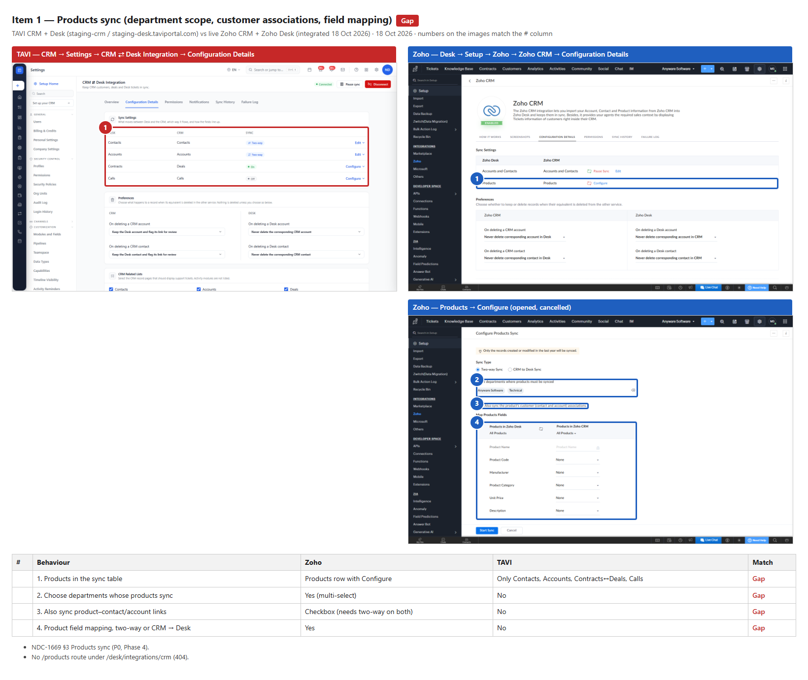
Gap 1: TAVI (left) vs Zoho (right).
Gap 2 · Z2Sync settingsNDC-1669 §2, Phase 1
Limit the sync to chosen CRM list views
Zoho
"All Accounts ▾" and "All Contacts ▾" pickers list any CRM view.
TAVI
Always syncs every record; /list-views returns 404.
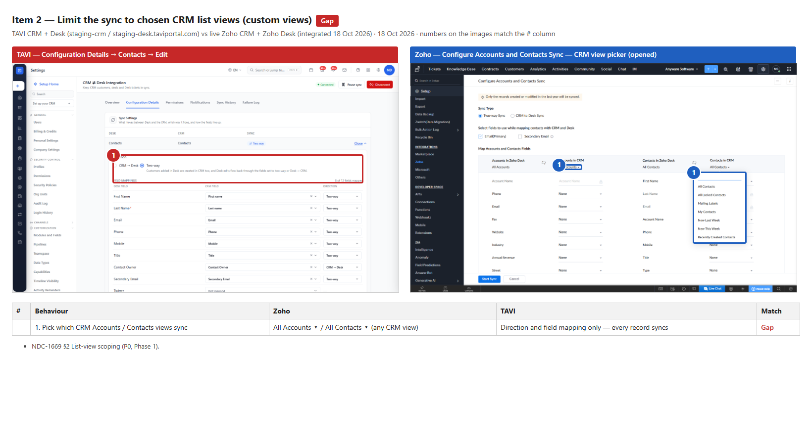
Gap 2: TAVI (left) vs Zoho (right).
Gap 3 · Z3Sync settingsNDC-1669 §2, Phase 1
Match contacts on the Secondary Email
Zoho
"Email (Primary)" and "Secondary Email" tick boxes, with an overwrite warning.
TAVI
Always matches on the primary email; secondary email is only a mapped field.
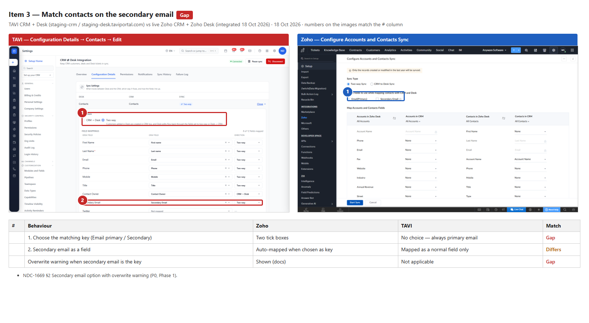
Gap 3: TAVI (left) vs Zoho (right).
Gap 4 · Z4Sync settingsNDC-1669 §5, Phase 2
"Delete in Desk only if there are no associates"
Zoho
CRM side: Always delete · Delete if there are no associates · Never delete.
TAVI
Keep and flag / Keep but unlink / Delete — no "if no associates" option. The Desk-side options already match Zoho.
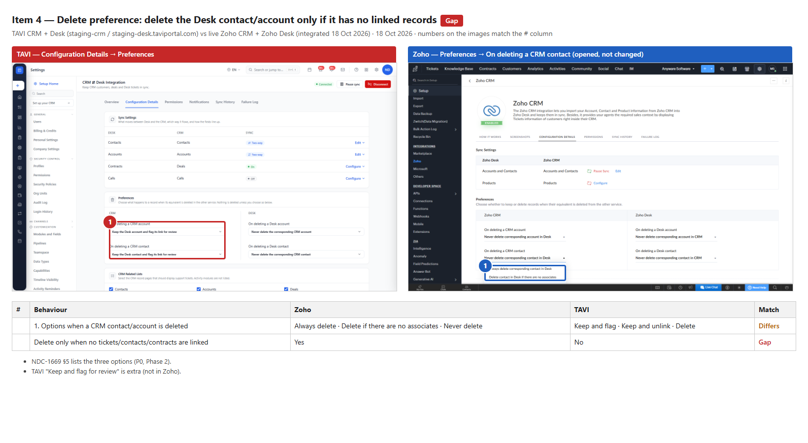
Gap 4: TAVI (left) vs Zoho (right).
Gap 5 · Z5Agent viewNDC-1669 §7, Phase 3
All CRM fields in the CRM pane
Zoho
Every field of the CRM record, custom fields included.
TAVI
8 fixed fields. The list is stored in config (panel.info_fields) but there is no screen to change it.
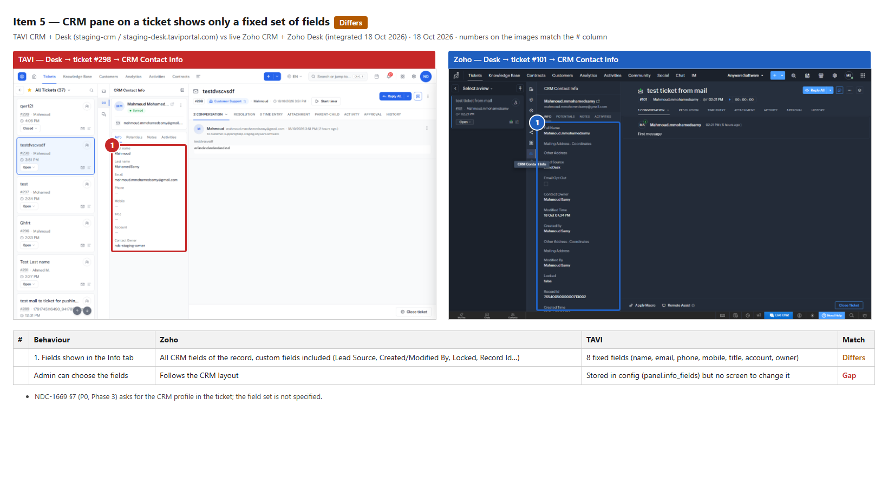
Gap 5: TAVI (left) vs Zoho (right).
Gap 6 · Z6CRM sideNot in NDC-1669
More ticket filters on the CRM record
Zoho
All, Open, On hold, Closed, Escalated, Overdue, High Priority.
TAVI
All / Open / On hold / Closed.
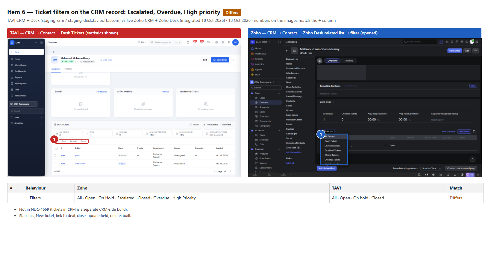
Gap 6: TAVI (left) vs Zoho (right).
Gap 7 · Z7CRM sideNDC-1669 §9 (no invite flow)
Mutual Users list and "Invite users to Desk"
Zoho
Lists mutual users and invites CRM users to Desk as Agent / Light Agent / Admin.
TAVI
The Permissions tab only has Ticket Visibility; /invite and /light-agents return 404.
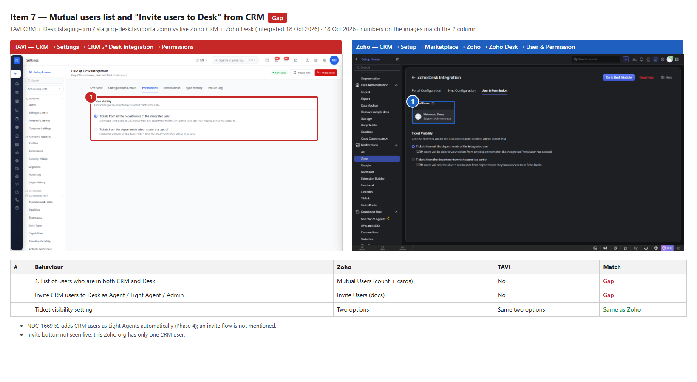
Gap 7: TAVI (left) vs Zoho (right).
Gap 8 · Z8AutomationNot in NDC-1669
"CRM Contact Type" condition in SLA and assignment rules
Zoho
Customer / Potential / Contact / Lead usable as a rule condition (Zoho API docs).
TAVI
The classification is only used by the Handshake Mode columns.
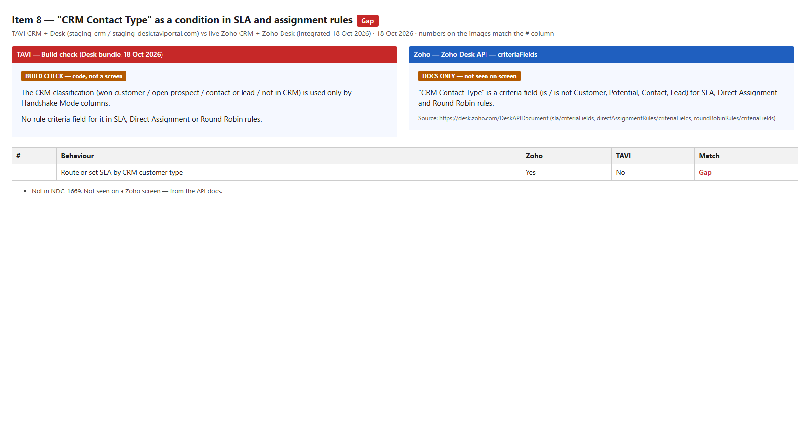
Gap 8: TAVI (left) vs Zoho (right).
Gap 9 · Z9PermissionsNDC-1669 §6, Phase 3
Default CRM data access and level names
Zoho
After connecting, only the Administrator profile sees CRM data; levels are No / Restricted / Full Access.
TAVI
Every profile starts at Full Access (panel.profile_access empty); the middle level is called "Custom Access".
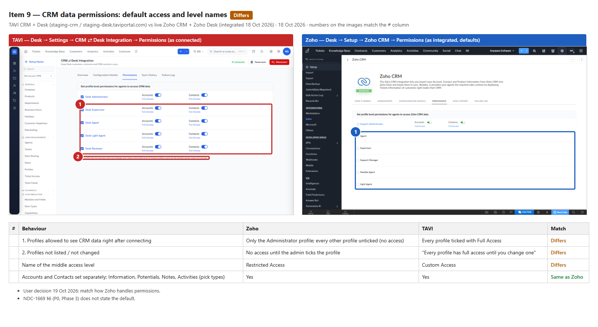
Gap 9: TAVI (left) vs Zoho (right).
Gap 10SetupNDC-1669 §4
No report when the initial sync finishes
Zoho
Admins get an email with counts of added, updated and ignored records and the reasons records were skipped.
TAVI
Nothing: no email seen, no bell entry, no text for it in the app.
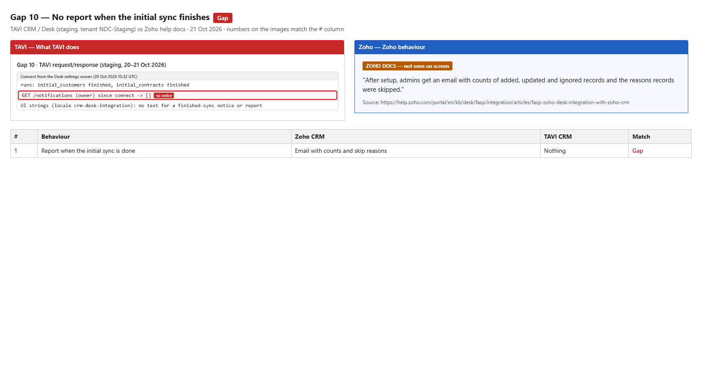
Gap 10: TAVI (left) vs Zoho docs (right).
Gap 11SyncNDC-1669 §2
A Desk contact with a CRM Lead's email becomes a new CRM contact
Zoho
A Desk contact is not created as a CRM contact if the same person exists as a CRM Lead (community answer).
TAVI
A second CRM record (a contact) is created for the lead's email.
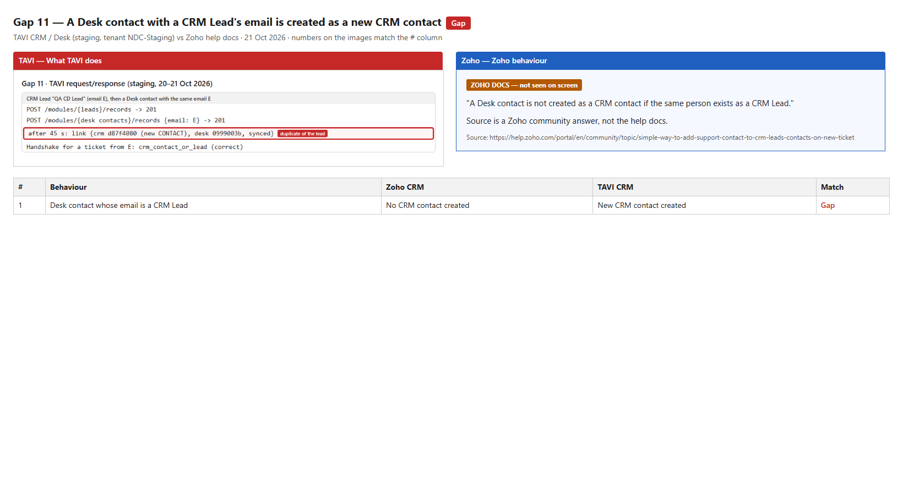
Gap 11: TAVI (left) vs Zoho docs (right).
Gap 12UsersNDC-1669 §9
CRM users are not Light Agents and cannot comment
Zoho
CRM users are auto-added to Desk as Light Agents; CRM-only users can view tickets and comment.
TAVI
CRM-only users have no Desk profile; viewing works, a comment gets 403.
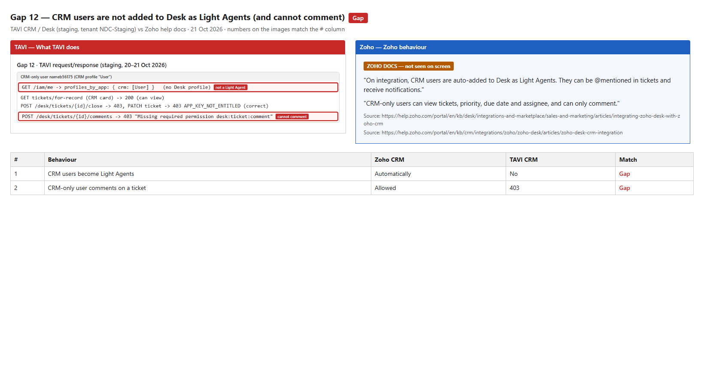
Gap 12: TAVI (left) vs Zoho docs (right).
Gap 13MentionsNDC-1669 §9
No @CRM Contact Owner mention
Zoho
Mentioning @CRM Contact Owner notifies that contact's owner in CRM.
TAVI
Not offered (a named CRM user can be mentioned and is notified).
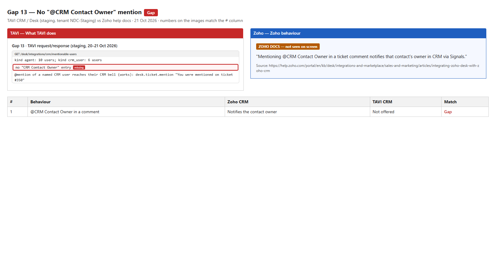
Gap 13: TAVI (left) vs Zoho docs (right).
Gap 14NotificationsNot in NDC-1669
Desk notifications in CRM only open the record
Zoho
Users can reply, comment or update from the signal.
TAVI
The bell entry opens the record; no actions in the notification.
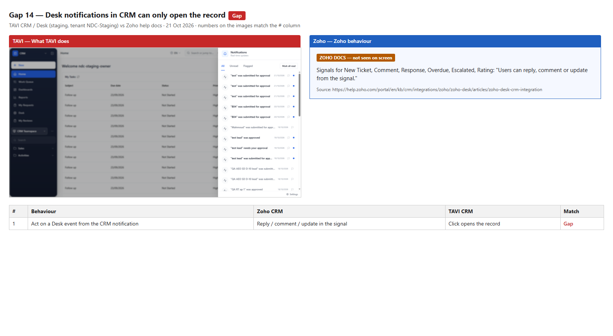
Gap 14: TAVI (left) vs Zoho docs (right).
Gap 15SetupNot in NDC-1669
No handling when the integrated user becomes inactive
Zoho
Desk prompts the other admins to re-point the integration or recreate it.
TAVI
No message or action for it in the app (not testable without deactivating the owner).
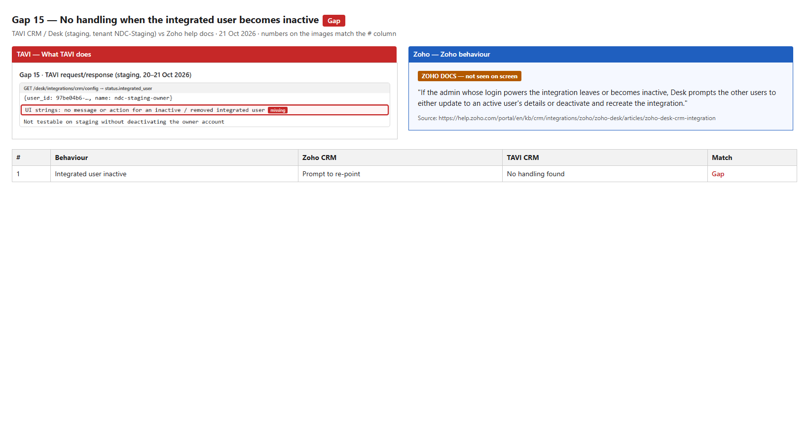
Gap 15: TAVI (left) vs Zoho docs (right).
Gap 18SetupNDC-1669 §4
The 12-month window of the first sync is not stated
Zoho
Only records created or modified in the last year are synced; stated on the configuration screen.
TAVI
Not stated; the behaviour cannot be tested on staging.
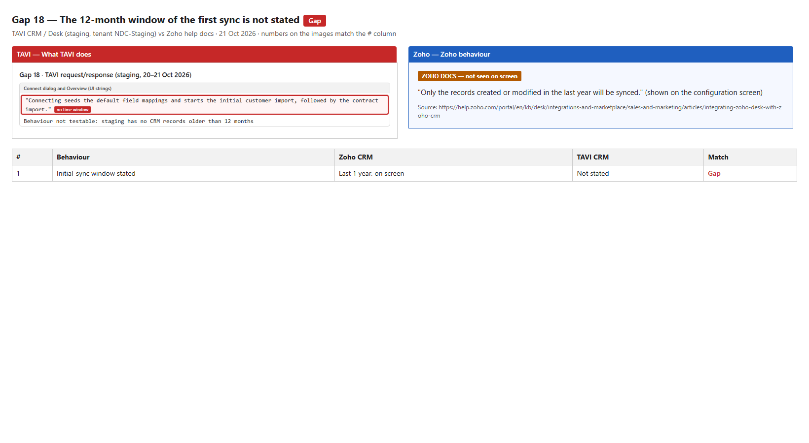
Gap 18: TAVI (left) vs Zoho docs (right).
Gap 19Handshake ModeNDC-1669 §8
Empty Handshake columns are shown
Zoho
Columns are system-defined; empty columns are hidden.
TAVI
An empty Customers column is shown with 0 and "No tickets in this Queue".
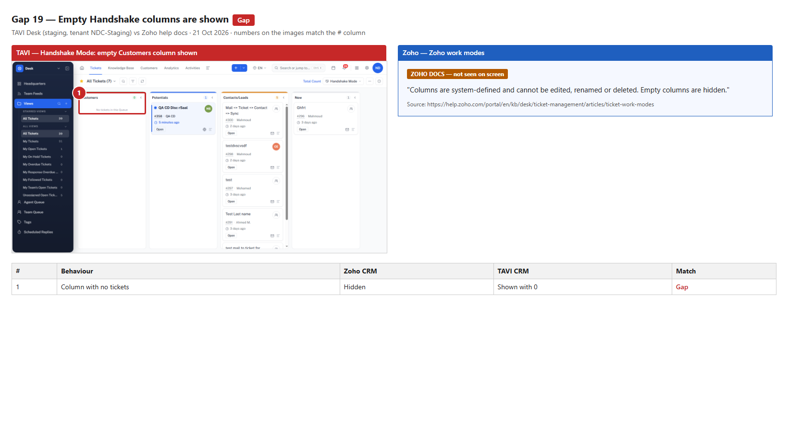
Gap 19: TAVI (left) vs Zoho docs (right).
Gaps 16 · 17Out of NDC-1669 scope
Zia Voice of the Customer and cross-app analytics
Zoho
CRM Zia uses Desk tickets as a Voice-of-the-Customer source (Enterprise). Zoho Analytics joins CRM and Desk tables automatically.
TAVI
Neither exists as part of the integration. Both are separate products in Zoho; listed so the comparison is complete.
Already done in TAVI
Connect / Disconnect, Pause with a reason, Resume; Overview with status and a live sync queue.
Contacts and Accounts sync, Two-way or CRM → Desk, with validated per-field mapping.
Delete preferences in both directions (the Desk side matches Zoho).
CRM Related Lists: Contacts, Accounts, Deals, Leads. TAVI CRM has no Products, Vendors or Cases modules, so that part is not an integration gap.
CRM pane on Desk tickets, contacts and accounts (Info / Potentials / Notes / Activities, Link / Unlink); Handshake Mode; Desk Tickets card and ticket workspace inside CRM.
TAVI extras Zoho does not have: Closed-Won deals become Desk contracts, phone calls copied to Desk, per-field sync direction, "keep and flag" delete option, discard a failure.
Could not be checked from the gap analysis
12-month lookback on the first sync: needs CRM records older than 12 months. Please confirm whether staging has any.
First-sync progress and notice: checked 20 Oct; no notice (gap 10).
Light Agents: checked 21 Oct; not added (gap 12).
Permission enforcement by the API: checked 20 Oct; enforced.
Checked 21 Oct with your OK: while disconnected, CRM hides the Desk card and menu (as Zoho); the ticket–deal link survives a disconnect (TAVI keeps it, not a gap).